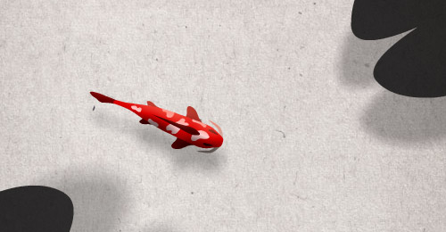

You don't like Flash? Then just a screenshot must do it. Sorry!
Koi fish made with Flash's bones tool. When you move the mouse left/right in front of the fish, he starts to swim faster.
If you’re on a MacBook, like I am, your fan might turn on. Sorry, I couldn’t resist adding some filters and effects. Press the [SPACE] bar to enable some performance stats.